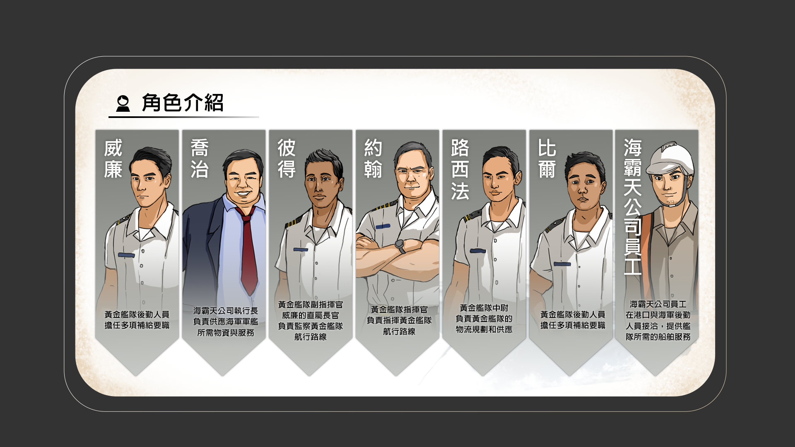
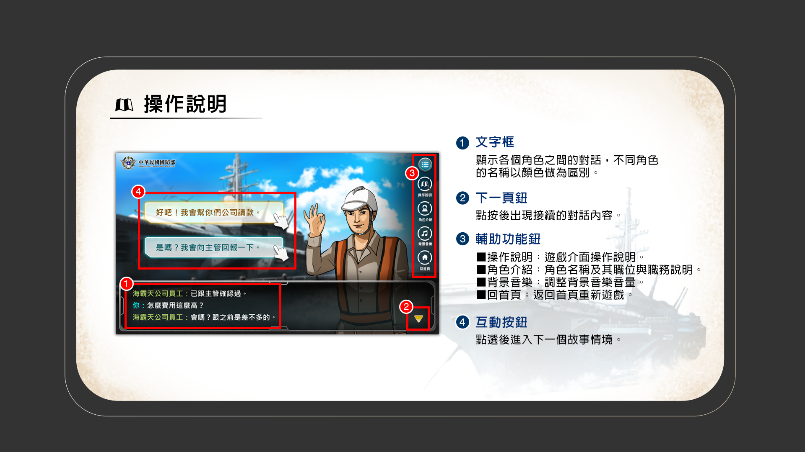
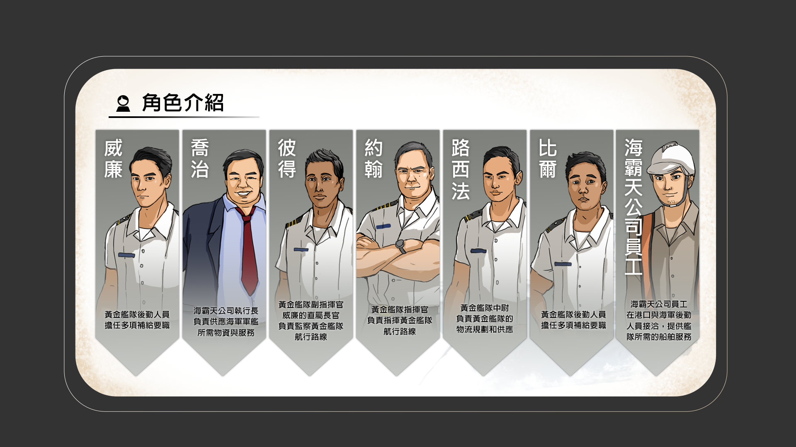
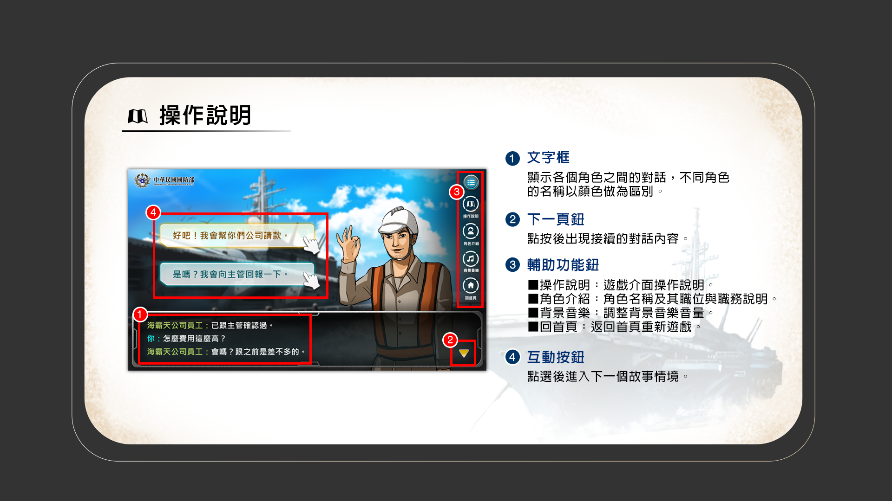

Loading...
威廉在黃金艦隊負責後勤補給的日子
已經7年又207天
這天他如往常一般準備登艦
所有預備工作既迅速且確實
與往常無異
但威廉不知道的是，他即將面臨可能左右人生的艱難抉擇……
接下來你即將進入遊戲，並擔任威廉這個角色
試想如果身處這些情境中
你，會怎麼做呢？
SKIP
三小時後...
 





請點按「作答回饋」觀看遊戲歷程。
| 可能有貪腐疑慮的情境 | 你的抉擇 | 相關說明 | |
| 正向路徑 | 消極或負向路徑 | ||
作答回饋中所列之相關法規內容如下所示：
《貪污治罪條例》
第 4 條 有下列行為之一者，處無期徒刑或十年以上有期徒刑，得併科新台幣一億元以下罰金：
一、竊取或侵占公用或公有器材、財物者。
二、藉勢或藉端勒索、勒徵、強占或強募財物者。
三、建築或經辦公用工程或購辦公用器材、物品，浮報價額、數量、收取回扣或有其他舞弊情事者。
四、以公用運輸工具裝運違禁物品或漏稅物品者。
五、對於違背職務之行為，要求、期約或收受賄賂或其他不正利益者。
前項第一款至第四款之未遂犯罰之。
作答回饋中所列之相關法規內容如下所示：
《貪污治罪條例》
第 2 條 公務員犯本條例之罪者，依本條例處斷。
第 4 條 有下列行為之一者，處無期徒刑或十年以上有期徒刑，得併科新台幣一億元以下罰金：
一、竊取或侵占公用或公有器材、財物者。
二、藉勢或藉端勒索、勒徵、強占或強募財物者。
三、建築或經辦公用工程或購辦公用器材、物品，浮報價額、數量、收取回扣或有其他舞弊情事者。
四、以公用運輸工具裝運違禁物品或漏稅物品者。
五、對於違背職務之行為，要求、期約或收受賄賂或其他不正利益者。
前項第一款至第四款之未遂犯罰之。
第 5 條 有下列行為之一者，處七年以上有期徒刑，得併科新臺幣六千萬元以下罰金：
一、意圖得利，擅提或截留公款或違背法令收募稅捐或公債者。
二、利用職務上之機會，以詐術使人將本人之物或第三人之物交付者。
三、對於職務上之行為，要求、期約或收受賄賂或其他不正利益者。
前項第一款及第二款之未遂犯罰之。
第 8 條 犯第四條至第六條之罪，於犯罪後自首，如有所得並自動繳交全部所得財物者，減輕或免除其刑；因而查獲其他正犯或共犯者，免除其刑。
犯第四條至第六條之罪，在偵查中自白，如有所得並自動繳交全部所得財物者，減輕其刑；因而查獲其他正犯或共犯者，減輕或免除其刑。
犯第四條至第六條之罪，在偵查中自白，如有所得並自動繳交全部所得財物者，減輕其刑；因而查獲其他正犯或共犯者，減輕或免除其刑。
第 11 條 對於第二條人員，關於違背職務之行為，行求、期約或交付賄賂或其他不正利益者，處一年以上七年以下有期徒刑，得併科新臺幣三百萬元以下罰金。
對於第二條人員，關於不違背職務之行為，行求、期約或交付賄賂或其他不正利益者，處三年以下有期徒刑、拘役或科或併科新臺幣五十萬元以下罰金。
對於外國、大陸地區、香港或澳門之公務員，就跨區貿易、投資或其他商業活動有關事項，為前二項行為者，依前二項規定處斷。
不具第二條人員之身分而犯前三項之罪者，亦同。
犯前四項之罪而自首者，免除其刑；在偵查或審判中自白者，減輕或免除其刑。
在中華民國領域外犯第一項至第三項之罪者，不問犯罪地之法律有無處罰規定，均依本條例處罰。
對於第二條人員，關於不違背職務之行為，行求、期約或交付賄賂或其他不正利益者，處三年以下有期徒刑、拘役或科或併科新臺幣五十萬元以下罰金。
對於外國、大陸地區、香港或澳門之公務員，就跨區貿易、投資或其他商業活動有關事項，為前二項行為者，依前二項規定處斷。
不具第二條人員之身分而犯前三項之罪者，亦同。
犯前四項之罪而自首者，免除其刑；在偵查或審判中自白者，減輕或免除其刑。
在中華民國領域外犯第一項至第三項之罪者，不問犯罪地之法律有無處罰規定，均依本條例處罰。
第 12 條 犯第四條至第六條之罪，情節輕微，而其所得或所圖得財物或不正利益在新臺幣五萬元以下者，減輕其刑。
犯前條第一項至第四項之罪，情節輕微，而其行求、期約或交付之財物或不正利益在新臺幣五萬元以下者，亦同。
犯前條第一項至第四項之罪，情節輕微，而其行求、期約或交付之財物或不正利益在新臺幣五萬元以下者，亦同。
作答回饋中所列之相關法規內容如下所示：
《國軍人員廉政倫理須知》
第 4 條 國軍人員不得贈與或要求、期約、收受與其職務有利害關係者財物、優惠交易、食、宿、交通、娛樂、旅遊、冶遊、其他類似情形之免費或優惠招待等不正利益。
第 7 條 國軍人員不得與其職務有利害關係者飲宴應酬。
作答回饋中所列之相關法規內容如下所示：
《政府採購法》
第 34 條 機關辦理採購，其招標文件於公告前應予保密。但須公開說明或藉以公開徵求廠商提供參考資料者，不在此限。
機關辦理招標，不得於開標前洩漏底價，領標、投標廠商之名稱與家數及其他足以造成限制競爭或不公平競爭之相關資料。底價於開標後至決標前，仍應保密，決標後除有特殊情形外，應予公開。
但機關依實際需要，得於招標文件中公告底價。
機關對於廠商投標文件，除供公務上使用或法令另有規定外，應保守秘密。
機關辦理招標，不得於開標前洩漏底價，領標、投標廠商之名稱與家數及其他足以造成限制競爭或不公平競爭之相關資料。底價於開標後至決標前，仍應保密，決標後除有特殊情形外，應予公開。
但機關依實際需要，得於招標文件中公告底價。
機關對於廠商投標文件，除供公務上使用或法令另有規定外，應保守秘密。
作答回饋中所列之相關法規內容如下所示：
《貪污治罪條例》
第 5 條 有下列行為之一者，處七年以上有期徒刑，得併科新臺幣六千萬元以下罰金：
一、意圖得利，擅提或截留公款或違背法令收募稅捐或公債者。
二、利用職務上之機會，以詐術使人將本人之物或第三人之物交付者。
三、對於職務上之行為，要求、期約或收受賄賂或其他不正利益者。
前項第一款及第二款之未遂犯罰之。
作答回饋中所列之相關法規內容如下所示：
《刑法》
第 21 條 依法令之行為，不罰依所屬上級公務員命令之職務上行為，不罰。
但明知命令違法者，不在此限。
但明知命令違法者，不在此限。
作答回饋中所列之相關法規內容如下所示：
《刑事訴訟法》
第 241 條 公務員因執行職務知有犯罪嫌疑者，應為告發。